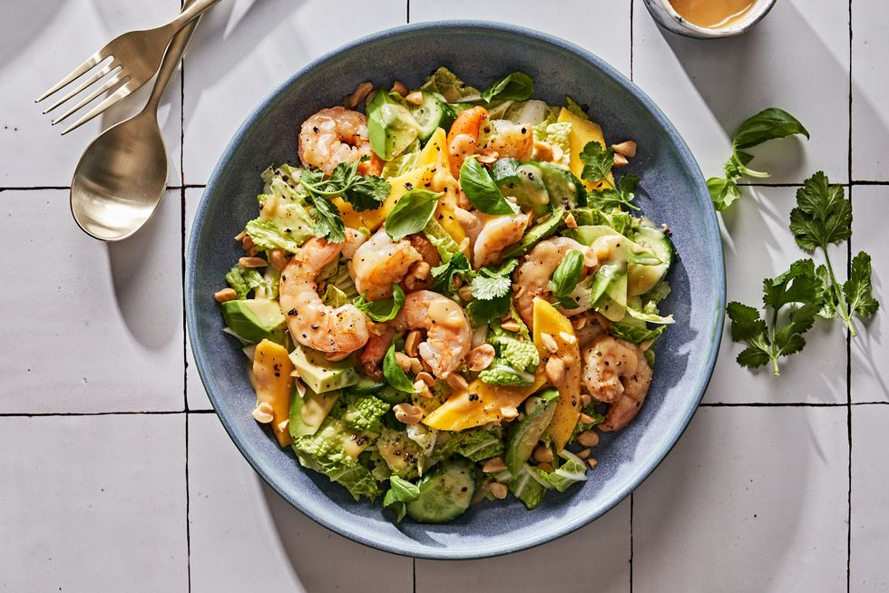

Shrimp and Mango salad recipe

"...A refreshing and delicious treat essential to any health conscious person..."
Ingredients: for the dressing
- 2 tbsp. white or yellow miso
- 1 tbsp. freshly grated ginger
- 2 tbsp. honey
- 2 tbsp. lime juice
- 1 tbsp. extra-virgin olive oil
- 1 tsp. toasted sesame oil
Ingredients: for the salad!
- 1 lb. medium shrimp, peeled and deveined
- Kosher salt
- Freshly ground black pepper
- 1 tbsp. extra-virgin olive oil
- 1/2 medium head napa cabbage, thinly sliced
- 1 large or 2 small ripe mangos, chopped
- 2 small cucumbers (such as Persian cucumbers), chopped
- 1 ripe avocado, cubed
- Roughly chopped toasted salted peanuts, for garnish
- Fresh basil or cilantro leaves, for garnish
The Blueprint!
- Whisk to combine all dressing ingredients in a medium bowl.
- Season shrimp all over with salt and pepper. In a large skillet, heat oil over medium heat. Add shrimp and cook until pink and opaque, about 2 minutes per side. Transfer to a plate to cool.
- Combine cabbage, mango, cucumbers, and avocado in a large bowl. Add dressing and toss gently to coat and mix the ingredients.
- Serve salad topped with shrimp, chopped peanuts, and herbs.